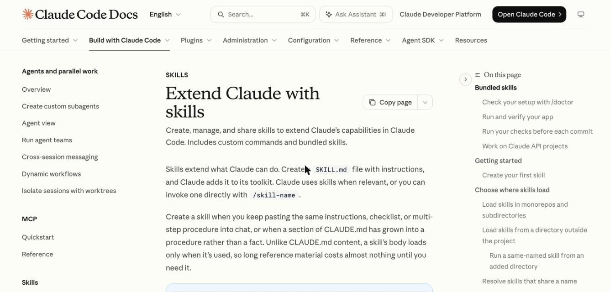
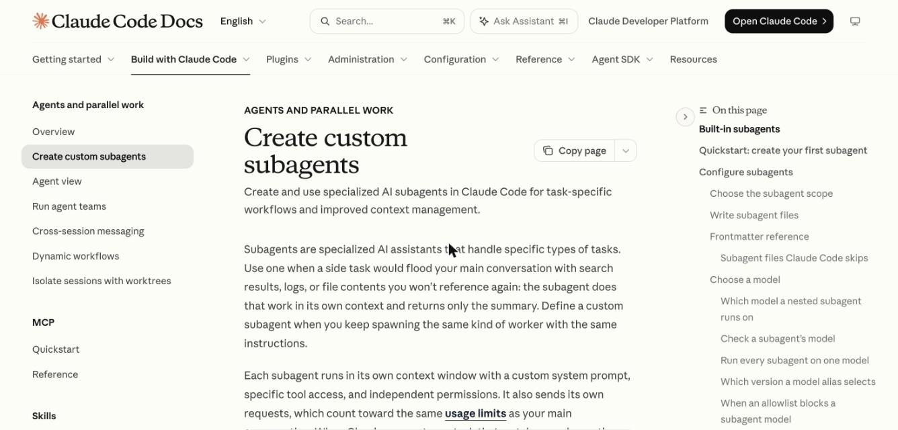

시키는 AI에서 맡기는 AI로: 클로드 에이전트 기능
이번 주에는 채팅을 만들고, API를 붙이고, 개발 도구를 바꿔 보고, 크롬 확장 프로그램을 만들었어요. 오늘은 이 일을 AI가 여러 단계로 나눠 스스로 해 나가게 하는 기능을 써 봐요. 일하는 방법을 적어 두는 스킬, 일을 나눠 맡기는 서브에이전트, 앱과 브라우저를 쓰는 손을 차례로 다뤄요. 마지막에는 사람이 꼭 확인해야 하는 곳을 정해요.
교육 개요
| 시간 | 09:00–18:00 (점심 12:00–13:00, 수업 8시간) |
|---|---|
| 교과 | [기본] AI 서비스 개발 · 16일차 (총 18일) |
| 교육 목표 | 에이전트가 무엇인지 설명하고, 스킬과 서브에이전트를 만들어 일을 맡기며, 에이전트에게 맡길 때 사람이 확인할 곳을 기획서에 적는다. |
| 수업이 끝나면 | ① 채팅과 에이전트의 차이를 말하기 ② 반복해서 쓰는 지시를 스킬(SKILL.md)로 만들어 부르기 ③ 검수 역할 서브에이전트를 만들어 일 나누기 ④ 커넥터·브라우저·컴퓨터를 쓰는 에이전트의 쓰임과 위험 말하기 ⑤ '사람이 확인할 곳' 표 쓰기 |
수업 전 준비
- 월요일 폴더: 월요일에 event-info.md와 답변 규칙으로 이벤트 도우미 채팅을 만들었던 것 기억하시나요? 그 폴더(또는 깃헙 저장소)를 열 수 있게 해 둬요.
- 이번 주 결과물 링크: 날씨 배너, 개발 환경 비교표, 크롬 확장 프로그램. 6세션 회고에서 써요.
타임테이블
| 시간 | 구분 | 내용 |
|---|---|---|
| 09:00–09:20 | 오늘의 단어 | 오늘의 단어 |
| 09:20–10:10 | SESSION 1 | 에이전트란? 채팅과 무엇이 다른가 |
| 10:20–12:00 | SESSION 2 | 스킬: 일하는 방법을 적어 두기 |
| 12:00–13:00 | 점심 | |
| 13:00–14:20 | SESSION 3 | 서브에이전트: 일을 나눠 맡기기 |
| 14:30–15:30 | SESSION 4 | 손이 생긴 AI: 커넥터·브라우저·컴퓨터 |
| 15:40–16:40 | SESSION 5 | 사람이 확인할 곳 정하기 |
| 16:50–17:40 | SESSION 6 | 4주차 회고 |
| 17:40–18:00 | 정리 | 오늘 정리와 다음 주 안내 |
오늘의 단어
오늘 처음 나오는 말을 먼저 짧게 짚고 시작해요.
| 단어 | 뜻 |
|---|---|
| 에이전트 | 목표를 받으면 스스로 계획을 세우고, 도구를 쓰고, 결과를 확인하며 여러 단계를 이어 가는 AI |
| 스킬(Skill) | "이 일은 이렇게 해"를 적어 둔 설명서 파일(SKILL.md). 필요할 때 클로드가 꺼내 읽어요. |
| 서브에이전트 | 한 가지 역할만 맡는 보조 AI. 자기만의 대화 공간에서 일하고 결과만 돌려줘요. |
| 커넥터(MCP) | 클로드를 슬랙, 구글 드라이브 같은 앱에 잇는 연결 |
| 사람이 확인할 곳(승인 지점) | AI가 다음 단계로 넘어가기 전에 사람이 보고 '예'를 눌러야 하는 곳 |
에이전트란? 채팅과 무엇이 다른가
이번 주에 클로드 코드에게 맡긴 일을 다시 보면, 이미 에이전트를 쓰고 있었어요. 무엇이 에이전트다운 부분인지 짚어요.
개념1-1. 한 번 답하기 vs 끝까지 해 나가기
| 구분 | 채팅 | 에이전트 |
|---|---|---|
| 받는 것 | 질문 하나 | 목표 하나("날씨 배너를 만들어 줘") |
| 하는 일 | 답을 한 번 써요 | 계획 → 도구 쓰기(파일 만들기, 명령 실행, 검색) → 결과 확인 → 다음 단계를 되풀이해요 |
| 사람이 하는 일 | 답을 읽고 다음 질문 | 목표·규칙을 주고, 승인 지점에서 확인 |
| 이번 주 예 | "API가 뭐야?" | 화요일 날씨 배너, 목요일 확장 프로그램 만들기 |
실습1-2. 이번 주 작업에서 에이전트 단계 찾기
클로드 코드에서 목요일 snippet-ext 작업 세션을 열고, 클로드가 한 일을 순서대로 적어요.
| 단계 | 클로드가 한 일 | 내가 승인했나 |
|---|---|---|
| 계획 | ||
| 도구 쓰기 | ||
| 확인 | ||
| 보고 |
스킬: 일하는 방법을 적어 두기
월요일에 이벤트 도우미의 답변 규칙을 프롬프트로 고쳤던 것 기억하시나요? 매번 붙여 넣던 그 규칙을 스킬로 만들어, 이름 하나로 불러 써요.
개념2-1. 스킬은 이렇게 생겼어요
| 부분 | 적는 것 | 예 |
|---|---|---|
| 폴더 위치 | 프로젝트 폴더의 .claude/skills/스킬이름/ | .claude/skills/event-answer/ |
| 폴더 이름 | 스킬 이름이 돼요. /이름 으로 불러요 | /event-answer |
| description | 언제 쓰는지 한 줄. 클로드가 이 줄을 보고 스스로 꺼내 써요 | 셀렉트마켓 이벤트 문의에 답변 초안을 쓸 때 |
| 본문 | 순서와 규칙 | 월요일에 고친 답변 규칙 |

출처: Claude Code 공식 문서 Agent Skills(SKILL.md, 필요할 때 자동으로 쓰거나 /스킬이름으로 직접 부름, 폴더 이름이 명령 이름) (2026-11-16 확인)
개발자·구현2-2. 답변 규칙 스킬 만들기
요청: 이 프로젝트에 event-answer 스킬을 만들어 줘. 내용: 위치는 .claude/skills/event-answer/SKILL.md. description은 '셀렉트마켓 이벤트 문의에 답변 초안을 쓸 때'로 해 줘. 본문에는 event-info.md만 근거로 답하기, 모르면 '확인 후 안내드릴게요'라고 하기, 해요체 3문장 이내, 개인정보는 묻지 않기를 순서대로 적어 줘. [월요일에 고친 답변 규칙이 있으면 붙여 넣으세요] 형식: SKILL.md 내용을 보여 주고, 승인하면 저장해 줘.
새 대화에서
/event-answer 쿠폰은 두 장 같이 쓸 수 있나요?를 보내요.이번에는 /를 빼고 "이벤트 문의 답변 써 줘: 배송은 언제 와요?"라고 보내, 클로드가 스킬을 스스로 꺼내 쓰는지 봐요.
| 시험 | 스킬을 썼나 | 규칙을 지켰나 |
|---|---|---|
| /event-answer 로 불렀을 때 | ||
| 그냥 부탁했을 때 |
결과2-3. 결과
이렇게 보이면 성공규칙을 붙여 넣지 않아도 답변이 해요체 3문장 이내로 나온다
서브에이전트: 일을 나눠 맡기기
쓰는 AI와 검수하는 AI를 나눠요. 문구를 검수하는 서브에이전트를 만들어, 이번 주에 만든 화면의 문구를 검사하게 해요.
개념3-1. 서브에이전트는 이렇게 일해요
| 구분 | 메인 클로드 | 서브에이전트 |
|---|---|---|
| 맡는 일 | 전체 계획과 연결 | 한 가지 역할(예: 문구 검수) |
| 대화 공간 | 지금 대화 | 자기만의 대화 공간. 결과만 메인에게 돌려줘요 |
| 만드는 곳 | 프로젝트 폴더의 .claude/agents/이름.md | |
| 언제 쓰이나 | description에 적은 일이 생기거나, 내가 이름을 불러 맡길 때 |

서브에이전트도 따로 AI에게 요청을 보내기 때문에, 내 사용량에 함께 쌓여요. 꼭 나눌 일에만 써요.
출처: Claude Code 공식 문서 Subagents(서브에이전트는 자기 컨텍스트 창에서 일하고 요약만 돌려줌, 요청은 같은 사용량 한도에 포함) (2026-11-16 확인)
개발자·구현3-2. 문구 검수 서브에이전트 만들고 맡기기
요청: copy-reviewer 서브에이전트를 만들어 줘. 내용: 위치는 .claude/agents/copy-reviewer.md. 역할은 화면 문구 검수만이고 파일은 고치지 않아. 검사 기준은 ① 해요체 ② 과장 표현(최고, 무조건) ③ 근거 없는 숫자 ④ 출처 표시 빠짐 ⑤ 버튼 이름이 하는 일과 맞는지. 형식: 만든 파일 내용을 보여 주고, 승인하면 저장해 줘.
요청: copy-reviewer에게 weather-banner/index-tailwind.html의 화면 문구를 검수하게 해 줘. 내용: 파일은 고치지 말고 검수 결과만 받아 줘. 형식: 문구 / 걸린 기준 / 고칠 문구 3열 표.
| 걸린 문구 | 기준 | 고칠지(예/아니요) |
|---|---|---|
고칠 문구는 내가 고르고, 메인 클로드에게 "표에서 예로 고른 것만 반영해 줘"라고 해요. 검수와 반영을 나누면, 무엇이 왜 바뀌었는지 남아요.
결과3-3. 결과
이렇게 보이면 성공검수 단계에서는 파일이 바뀌지 않았고, 반영 단계에서 고른 것만 바뀌었다
손이 생긴 AI: 커넥터·브라우저·컴퓨터
에이전트는 파일만 다루지 않아요. 앱에 연결하고, 브라우저를 누르고, 컴퓨터 화면을 조작해요. 세 가지 손을 견주고 하나를 써 봐요.
개념4-1. 세 가지 손 견주기
| 손 | 무엇으로 일하나 | 잘 맞는 일 | 조심할 점 |
|---|---|---|---|
| 커넥터 | 앱이 열어 둔 API(지난 화요일에 배운 창구) | 슬랙 메시지 찾기, 드라이브 문서 읽기 | 연결한 계정의 권한만큼 볼 수 있어요 |
| 브라우저 | 웹페이지를 사람처럼 읽고 눌러요(클로드 인 크롬 등) | API가 없는 사이트에서 정보 모으기, 양식 채우기 | 로그인된 사이트에서 일해요. 보내기·결제는 사람이 눌러요 |
| 컴퓨터 | 화면을 보고 마우스·키보드를 조작해요 | 웹이 아닌 데스크톱 앱 작업 | 느리고, 화면이 바뀌면 잘못 누를 수 있어요 |
손과 함께 쓰는 것이 예약 작업이에요. "매일 아침 9시에 슬랙의 어제 문의를 모아 정리해 줘"처럼 정해진 때에 같은 일을 다시 맡겨요. 사람이 보지 않는 시간에 돌기 때문에, 5세션의 '사람이 확인할 곳'이 더 중요해져요.
더 읽기: 사진 대신 이름표로 · Vercel agent-desktop (화면 사진 대신 이름표로 앱을 누르는 방법)
실습4-2. 브라우저 손으로 정보 모으기
화요일에 공공데이터포털에서 이용 조건을 손으로 읽어 표를 채웠던 것 기억하시나요? 같은 일을 브라우저를 쓰는 클로드에게 맡겨 봐요.
요청: 공공데이터포털에서 '기상청_단기예보 조회서비스' 상세 화면을 열고 이용 조건을 읽어 줘. 내용: 로그인, 활용신청, 그 밖에 무엇을 누르거나 보내는 일은 하지 말고 읽기만 해 줘. 형식: 비용부과유무 / 심의유형 / 신청 가능 트래픽 / 이용허락범위 4줄과, 읽은 페이지 주소.
| 견줄 것 | 화요일에 내가 읽은 값 | 브라우저 클로드가 읽은 값 |
|---|---|---|
| 비용부과유무 | ||
| 심의유형 | ||
| 신청 가능 트래픽 | ||
| 걸린 시간 |
사람이 확인할 곳 정하기
에이전트가 "다 했어요"라고 보고해도 실제로는 안 된 경우가 있어요. 실제 실패 사례를 보고, 내 서비스에서 사람이 확인할 곳을 정해요.
사례5-1. 쿠폰을 만들었다고 했는데, 아무것도 없었어요
| 단계 | 일어난 일 |
|---|---|
| 맡긴 일 | 쇼핑몰 관리자 화면에서 쿠폰 만들기. 사람이 승인하면 에이전트가 관리자 화면을 자동으로 눌러 등록 |
| 에이전트의 보고 | "쿠폰을 생성했습니다" |
| 실제 상태 | 쿠폰이 등록되지 않았고, 한 번 실행한 뒤 오류로 멈춤 |
| 더 어려웠던 점 | 오류 메시지만으로는 어디서 왜 멈췄는지 알 수 없었음 |
| 빠져 있던 것 | 있었다면 |
|---|---|
| 실제 상태 확인 | 등록 뒤 쿠폰 목록을 다시 읽어 '있다'를 확인하고 보고 |
| 멈춘 지점 알림 | "3단계 저장 단추에서 멈췄어요"처럼 사람이 이어받을 곳을 알려 줌 |
| 되돌리기 | 반쯤 만들어진 쿠폰을 지우거나 원래대로 돌리는 방법 |
이 사례의 결론은 "에이전트를 쓰지 말자"가 아니에요. 완전히 맡기지 않고, 막히면 사람이 바로 이어받을 수 있게 길을 만들어 두자는 거예요.
기획자5-2. 내 서비스의 '사람이 확인할 곳' 표
월요일의 이벤트 도우미나 목요일의 확장 프로그램을 에이전트가 더 많이 맡는다고 생각하고 표를 채워요.
| 에이전트가 할 일 | 되돌릴 수 있나 | 사람이 확인할 곳 | 실제 상태를 확인하는 방법 | 막히면 누가 어떻게 이어받나 |
|---|---|---|---|---|
| 예: 고객에게 쿠폰 안내 메일 보내기 | 아니요(보내면 끝) | 보내기 전 초안 승인 | 보낸 편지함에서 받는 사람 수 확인 | 운영 담당자가 초안함에서 직접 보냄 |
확인할 점
- 되돌릴 수 없는 일(보내기, 결제, 지우기)에는 모두 사람이 확인할 곳이 있다
- '보고'가 아니라 '실제 상태'를 확인하는 방법이 적혀 있다
결과5-3. 결과
이렇게 보이면 성공표의 모든 줄에 '실제 상태를 확인하는 방법'이 채워져 있다
4주차 회고
이번 주 결과물을 한 줄씩 모으고, 기획자로서 새로 할 수 있게 된 말을 정리해요.
정리6-1. 이번 주 결과물 모으기
| 요일 | 결과물 | 링크 | 이제 기획서에 쓸 수 있는 말 |
|---|---|---|---|
| 월 | 내장 AI 이벤트 도우미 + 답변 규칙 | 예: 답변 근거 문서와 모를 때의 답을 정해야 한다 | |
| 화 | 날씨 배너 + API 비교표 | ||
| 수 | 라이브러리로 다듬은 배너 + 개발 환경 비교표 | ||
| 목 | 크롬 확장 프로그램 | ||
| 금 | 스킬 + 서브에이전트 + 사람이 확인할 곳 표 |
오늘 정리와 다음 주 안내
오늘의 규칙
- 반복해서 붙여 넣는 지시는 스킬로 만든다
- 쓰는 역할과 검수하는 역할을 나눈다
- 에이전트에게 주는 손(커넥터·브라우저·컴퓨터)은 일에 맞게 가장 적게
- 되돌릴 수 없는 일 앞에는 사람이 확인할 곳을, 보고 뒤에는 실제 상태 확인을 둔다
답변 규칙 스킬 + 문구 검수 서브에이전트 + 사람이 확인할 곳 표 + 4주차 회고 표
6-1 회고 표를 채우고, 결과물 링크를 과제 저장소에 올려요.